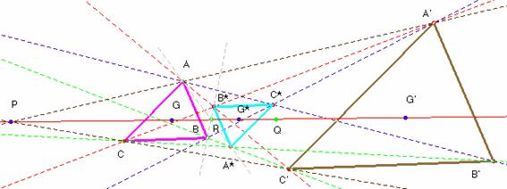

Problema 104.- Sean ABC y A'B'C' dos triángulos homotéticos en posición de Thales (lados homólogos paralelos).
Definimos los puntos A* B* C* como los de intersección de los pares de rectas BC' y B'C, AC' y A'C, y AB' y A'B respectivamente.
Demostrar que el triángulo A* B* C* es homotético a los dos triángulos anteriores y que los centros de gravedad o baricentros de los tres triángulos son colineales, es decir, están alineados. (Romero, J.B. Crux Mathematicorum. Problem 1480.)
Solución de Saturnino Campo Ruiz, profesor de Matemáticas del IES Fray Luis de León de Salamanca (3 de julio de 2003)
Solución.- Para demostrar que los tres triángulos son homotéticos, vamos a probar que un lado, por ejemplo el B*C* es paralelo a C’B’. Sea k la razón de la homotecia que transforma ABC en A’B’C’.

De la semejanza de los triángulos AB*C y C’B*A’ se obtiene , de donde B*C’ = k·AB* (1) . La semejanza de AC*B y B’C*A’ implica que , de donde C*B’ = k·C*A. (2). De (1) y (2) se tiene ahora ; así pues, los triángulos AB*C* y AC’B’ son semejantes por tener un ángulo común y sus lados proporcionales, por consiguiente B*C* es paralelo a C’B’. Con otro par de lados se procede de igual forma.
Vamos a probar ahora la alineación de los baricentros. Que G y G’ estén alineados con P (centro de la homotecia entre ABC y A’B’C’) es inmediato, pues los triángulos AGC y A’G’C’ son homotéticos (y en posición de Thales). De igual modo, si ABC y A*B*C* son homotéticos, sus centros de gravedad también están alineados con el punto R centro de la homotecia que transforma uno en el otro, y como este centro R está alineado con P y con Q (=centro de la homotecia que transforma A*B*C* en A’B’C’), resultará que los tres centros de gravedad (y también los tres centros de las homotecias) G, G* y G’ están alineados, como se quería demostrar.
(La composición de dos homotecias de distinto centro es otra homotecia cuyo centro está alineado con los anteriores)